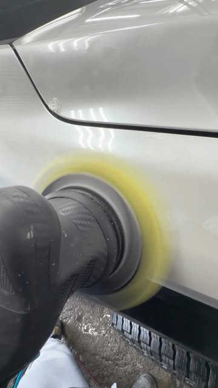

Bayamón, Puerto Rico · Taller certificado en cerámica
Corrección de pintura, tratamiento cerámico de 3 y 5 años, Premium Detail y lavado detallado. Primero preparamos y corregimos la pintura, luego aplicamos la protección para mantener el resultado.
Resultados reales
Cada foto es un trabajo real del taller. Toca las flechas o desliza para ver más.
El taller
Cerámica de 3 años (Jade Jet Graphene) y opción de 5 años en pintura y cristales, con preparación y corrección de pintura de 1 paso. Brillo profundo que dura años.
Corrección de 1 paso a máquina para micro rayas, hologramas y marcas de lavado. Devolvemos profundidad y claridad a tu pintura antes de protegerla.
Nuestro servicio más completo: lavado exterior e interior, descontaminación de pintura, clay bar, 1 paso de pulido a máquina, cerámica en pintura y cristales, y primer lavado de mantenimiento incluido.
Foam, lavado a mano y secado con detalle. El primer paso de todo buen trabajo: una superficie limpia y lista para brillar.
Lavado básico de interior, limpieza y acondicionamiento de interiores, y vapor interior profundo. Tu cabina como nueva, sin olores ni suciedad.
Combo de lavado detallado más sellador cerámico de 6 meses de duración. Protección real para el que quiere brillo sin el compromiso de la cerámica larga.

Quiénes somos
Somos un taller certificado en cerámica y corrección de pintura en Bayamón. No se trata solamente de brillar tu auto: primero preparamos y corregimos la pintura, y luego aplicamos la protección para mantener el resultado y facilitar el mantenimiento.
Cada vehículo sale del taller con el mismo estándar: brillo profundo, detalle por detalle, sin atajos. Por eso decimos que el brillo habla por sí solo.
Preguntas frecuentes
Es un recubrimiento de protección que aplicamos sobre la pintura y los cristales de tu vehículo. Crea una capa de brillo profundo que protege la superficie, repele agua y contaminantes, y facilita el mantenimiento.
Trabajamos cerámica de 3 años (Jade Jet Graphene) y opción de 5 años en pintura y cristales, siempre con preparación y corrección de pintura de 1 paso. Escríbenos por WhatsApp y te recomendamos la que mejor va con tu vehículo.
Lavado exterior e interior, descontaminación de pintura, clay bar, 1 paso de pulido a máquina, cerámica en pintura y cristales, y primer lavado de mantenimiento incluido.
Sí, todos los trabajos se coordinan por cita. Escríbenos por WhatsApp al +1 787-461-4452 y separamos tu espacio.
Estamos en la Calle 12 Z-10, Bayamón, Puerto Rico (Santa Mónica).
Aceptamos ATH Móvil y tarjetas. Consúltanos por WhatsApp al +1 787-461-4452 y te confirmamos los detalles.
Síguenos en @pabon.autodetailing y mira el antes y después de cada trabajo.
Agenda tu cita
Teléfono / WhatsApp
+1 787-461-4452Ubicación
Calle 12 Z-10, Bayamón, PR
Horario
Mar, jue y sáb · 8:00 AM - 4:00 PM
Llena esto y te abrimos WhatsApp con tu mensaje listo.
Esta página la creó ManuPro. Escríbenos hoy mismo y cotiza la website profesional de tu negocio.
Cotizar por WhatsApp